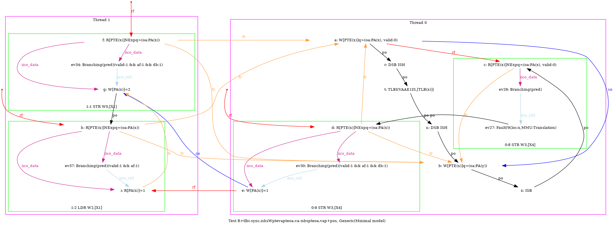
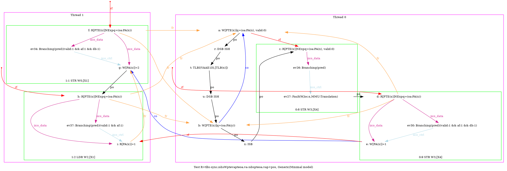
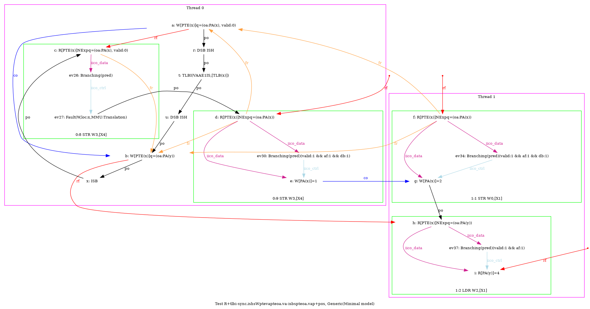
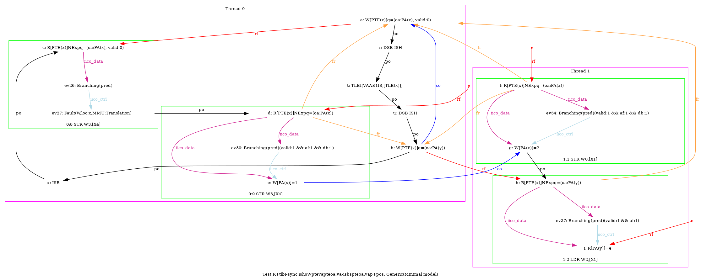

   …
AArch64 R+tlbi-sync.ishsWptevapteoa.va-isbspteoa.vap+pos
"TLBI-sync.ISHsWWPteVAPteOA.VA ISBsWWPteOA.VAP Coe PosWR FrePPteVA"
Variant=imprecise
Cycle=Coe PosWR FrePPteVA TLBI-sync.ISHsWWPteVAPteOA.VA ISBsWWPteOA.VAP
Relax=[PteVA,TLBI-sync.ISHsWW,PteOA,PteVA,ISBsWW]
Safe=Fre Coe PosWR
Generator=diy7 (version 7.56+02~dev)
Com=Co Fr
Orig=TLBI-sync.ISHsWWPteVAPteOA.VA ISBsWWPteOA.VAP Coe PosWR FrePPteVA
{ int x=0; int y=4;
0:X0=PTE(x); 0:X1=(oa:PA(x), valid:0); 0:X2=(oa:PA(y)); 0:X4=x;
1:X1=x;
}
P0 | P1 ;
STR X1,[X0] | MOV W0,#2 ;
LSR X5,X4,#12 | STR W0,[X1] ;
DSB ISH | LDR W2,[X1] ;
TLBI VAAE1IS,X5 | ;
DSB ISH | ;
STR X2,[X0] | ;
ISB | ;
MOV W3,#1 | ;
STR W3,[X4] | ;
exists (1:X2=1 /\ [x]=0 /\ fault(P0,x,MMU:Translation) /\ ~fault(P1,x)) \/ (1:X2=1 /\ [x]=2 /\ fault(P0,x,MMU:Translation) /\ ~fault(P1,x)) \/ (1:X2=4 /\ [x]=2 /\ fault(P0,x,MMU:Translation) /\ ~fault(P1,x))